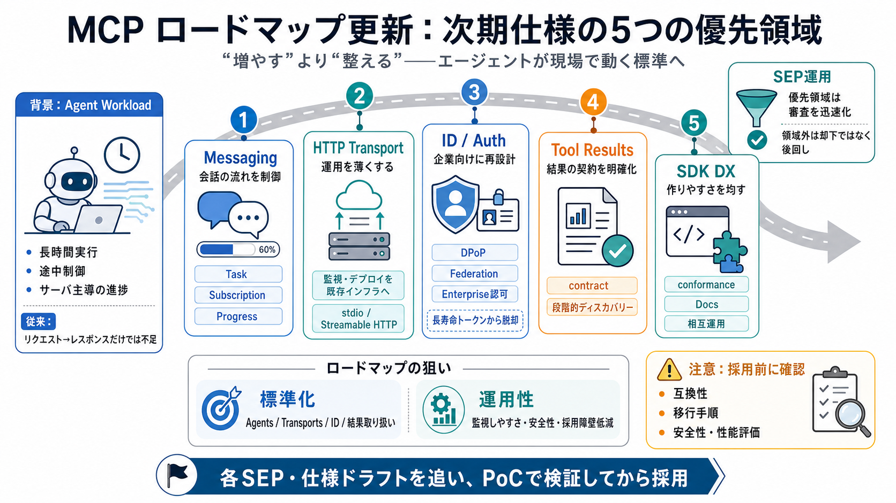

Everything your team needs to know about MCP in 2026
Transport evolution: Streamable HTTP gave MCP a production-ready transport, but running it at scale has exposed gaps. Th…

Transport evolution: Streamable HTTP gave MCP a production-ready transport, but running it at scale has exposed gaps. Th…
Authentication and identity. MCP currently relies on static secrets for most server authentication. The roadmap points t…
The Model Context Protocol has its biggest update since launch. The new specification - officially versioned 2026-07-28 …
In-flight is the operative phrase: these are proposals with sponsors, not shipped protocol. If your design assumes a wor…
Share ## Key takeaways On July 28, 2026, the Model Context Protocol (MCP) will officially transition to an enterprise-…